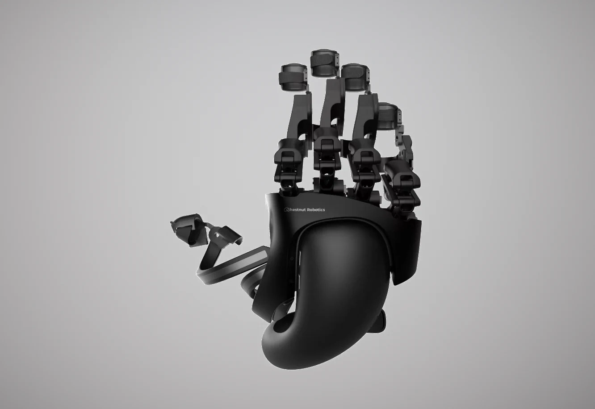
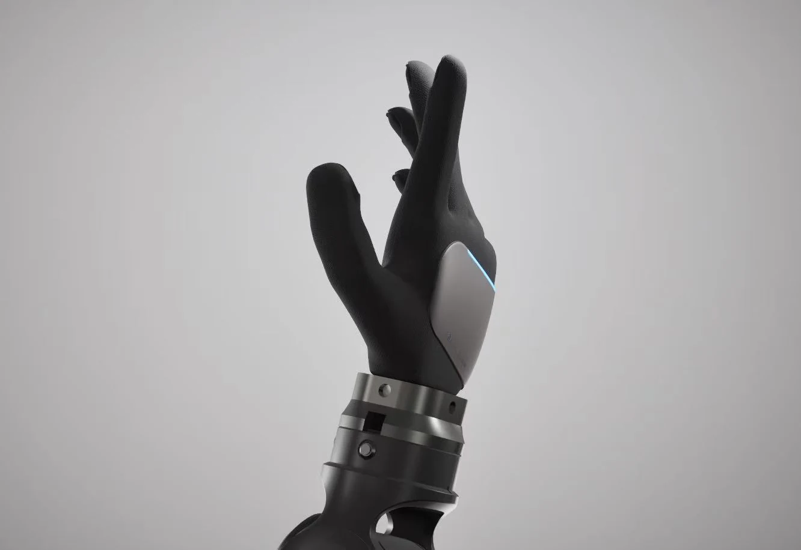

01 Motion correspondence
Joint motion is considered on both sides of the system, so demonstration capture is designed around the target hand’s action space.
Aero UMI + Aero Hand
Co-designing human demonstration capture and robotic execution.
Learning dexterous manipulation from human demonstrations requires capturing both hand motion and interaction with objects. Differences between the demonstration interface and the robot introduce a challenge: how should the recorded action relate to what the robot can execute? We present Aero, a platform that co-designs a wearable demonstration interface (Aero UMI) and a five-finger robotic hand (Aero Hand). The two devices are designed around corresponding joint motion and fingertip contact surfaces, with joint and camera calibration connecting their observations. Aero UMI records motion and tactile observations and supports teleoperation of Aero Hand. The goal is to collect demonstrations with the execution embodiment in mind, providing a basis for studying learning from motion and touch.
A demonstration interface and a robot hand designed as a pair.

(a) Aero UMIHuman demonstration interface

(b) Aero HandDexterous robotic hand
Joint motion is considered on both sides of the system, so demonstration capture is designed around the target hand’s action space.
Corresponding fingertip contact surfaces connect the design of the wearable interface to the robot’s interaction with objects.
Joint and camera calibration connect the physical devices and their observations within the demonstration setup.
Qualitative examples of touch, teleoperation, contact interaction and grip. Use the arrows or swipe to browse.
These demonstrations illustrate system interaction; they are not evaluations of an autonomous learned policy.
Further information about the hardware and this project.